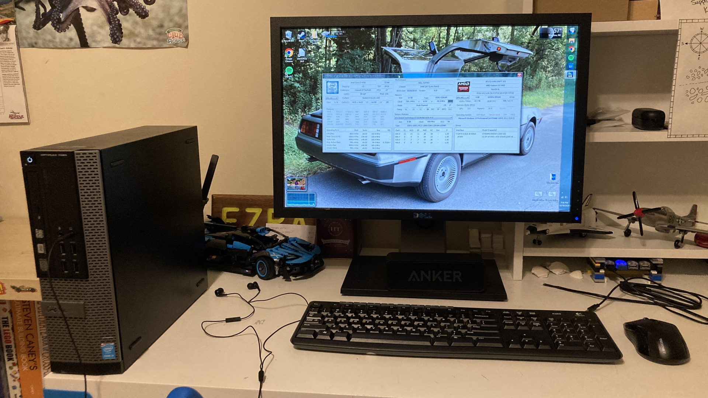

OptiPlex gaming PC 10/5/2024
So a few months ago, I got an old OptiPlex system from my dad's workplace. In a former life, it was a mere office computer, but over the weekend I transformed it into a relatively decent gaming PC. Previously, I did my gaming on a 12-year old Dell laptop that was powered by a dual-core 3rd gen Core i7, and didn't have a dedicated GPU. Also, it could barely run Windows 10, let alone games. This OptiPlex is a whole lot better than that old laptop, and for now, it's plenty of computer for me.
The plan
The OptiPlex originally had a 4th gen Core i5, 8 GB of RAM, and a 128 GB SSD in it. No graphics card or Wi-Fi. The power supply is also a pretty wimpy 255 W OEM unit that has proprietary connectors, which makes it difficult/impossible to replace. In addition, it's the SFF model, so it requires a low-profile graphics card, and has only 2 PCIe slots. So I needed components that wouldn't max out the power supply and would fit in the case.
I quickly discovered that there's a pretty decent low-profile single-slot graphics card that is known as the Radeon RX 6400. It's technically a repurposed laptop GPU, so it is missing some common desktop GPU features, like a video encoder for better screen capturing, but I didn't care too much.
The RAM and storage situation is also not ideal for a gaming PC. So I picked up a 16 GB kit to replace the old memory, and also grabbed a 500 GB SSD for more storage. I also thought I'd get a Core i7 to give the graphics card its best chance of not being bottlenecked in a system this old.
I also got a TP-Link Wi-Fi card, since the OptiPlex only had Ethernet, and I didn't want to bother with cables to get it online. The card also has Bluetooth, but as I'm writing this, it does not work, since the OptiPlex's motherboard doesn't have a required connector for the Wi-Fi card.
Here's a picture of all the parts except the processor. I would have bought the Sapphire Pulse version of the RX 6400 for reasons that will become clear in a moment, but it was unavailable when I ordered my parts.
The parts lineup (except for the CPU)
The build
After all my parts arrived, I finally tore into the OptiPlex. It had been sitting untouched in a corner for several months now, but it was finally time to give it some purpose for being in my house.
The first thing to do was unbox the graphics card and Wi-Fi card, and install their low-profile brackets. The graphics card has a fairly annoying procedure to do this. First you remove the three visible screws holding the bracket on, then you realize that there's one more screw so you closely examine the card only to find that it's hiding under the shroud. To get to it, you either have to remove the cooler entirely, or remove the shroud. The shroud is held on with 8 tiny screws. After that annoying detour, you finally gain access to the final screw for the PCIe bracket, and then you have to do it all in reverse. That's why I said I would have bought the Sapphire Pulse RX 6400. It reportedly has a far easier low profile bracket installation. The Wi-Fi card was a bit easier, since it didn't have any hidden screws that required you to take a 5-minute detour to get off.
After that, most of the rest of the installations went smoothly, but for some reason I had to almost force the graphics card into its PCIe slot on the motherboard. I also needed to repaste the CPU cooler, since the CPU was being replaced and the thermal paste was really dry anyways. That wasn't nearly as bad as I was expecting, and it paid off. The CPU runs as cool as it can in a case that has horrible airflow. After everything was installed, I put the side panel back on, hooked up a monitor, keyboard, and mouse, and turned on the PC. It worked immediately, and once in the BIOS, it recognized everything I installed. I even got display output from the graphics card.
Closing up the OptiPlex after component installation.
Software
At the moment, my OptiPlex's new SSD was totally blank, so I installed a fresh copy of Windows 10 on it. It went a lot faster than I was expecting, probably because I booted the installer from a USB hard drive instead of the typical el cheapo USB 2.0 16 GB thumb drive.
The Windows installer bootscreen. For some reason, it likes scaling weirdly.
Deploying the Windows 10 image to a brand-new SSD.
The second stage of Windows setup—OOBE—complete.
After reaching the desktop, however, I realized that I didn't have internet. The Wi-Fi card's drivers weren't included in Windows 10, so I had to find a way to download them. I ended up using an old Android tablet to download the latest driver from TP-Link, and then transferred it over USB to the OptiPlex. The Wi-Fi driver installed without any trouble, and with that I could start downloading apps and games. Oh, and all the Windows updates that were waiting for me. After doing that and setting a proper hostname, I then transferred over documents and pictures from my old laptop, and applied the Aero theme. Then I could get to testing game performance.
In terms of performance, my OptiPlex runs all my games so much better than that old laptop I was using before. I do like me some Minecraft, and my OptiPlex can run it with shaders on, and even at great-looking settings.
Look at this! This looks so goooood!
I was actually pretty impressed with how it performs. Most of my games barely utilize the CPU, so it's not being a bottleneck at all. And I don't think the fact that the graphics card has only 4 GB of VRAM matters at all. However, the graphics card runs extremely hot, especially with those Minecraft shaders, likely due to its placement:
Yeah, uhh... that's not great for temperatures...
But the computer still works really well aside from that, and I had a lot of fun building it. I also learned a few things. Such as the fact that you don't have to mutilate a USB cable to get Bluetooth working on your Wi-Fi card installed in an OptiPlex that doesn't have any spare USB headers, you can get a little adapter to plug it into an external USB port. Unfortunately, I already ruined the Wi-Fi card's internal USB cable. And no, Bluetooth does not work on it. Big sad.
The final setup for the build.
I don't think I'm entirely done with this PC yet. I do want to get Bluetooth working, so that the Bluetooth speaker in the picture above can connect properly. Right now, I'm using an aux cable to connect the speaker to the PC, but the speaker's playback controls do not work over the aux cable, and I have no way of checking the battery level of the speaker. And I do kind of want to find a way to get the graphics card into a more ideal place, since it can get up to 94° C in Minecraft (although it normally hovers around 85°), which kind of sucks. First, that's nearly the boiling point of water, and second, it's not great for graphics card longevity. So I may come back to this OptiPlex later on and do some more stuff to it. But for now, this is its final state.